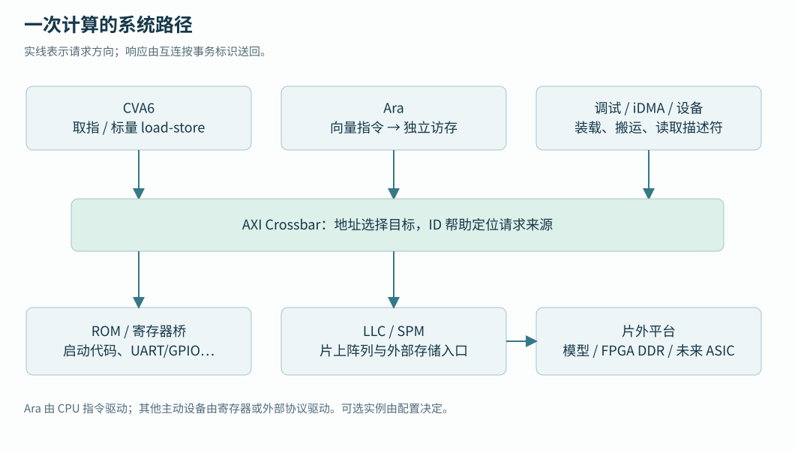

第一篇 · 系统基础与配置
01 · 整体架构与平台边界
沿取指、数组与字符输出辨认模块职责。
本章目录 · 节与小节
沿取指、数组与字符输出辨认模块职责。 前置：C 指针和基本 RTL 模块连接；RISC-V 与 AXI 术语在正文首次使用时解释。
1.1 从计算单元到可运行系统
处理器执行加法时，操作数可以已经在寄存器里；完整程序却还需要保存指令、取得输入、放置输出，并知道从哪里开始执行。片上系统（SoC）把处理器、存储、设备和连接它们的逻辑组合起来。Cheshire 是本工程的系统集成层，CVA6 是标量处理器，Ara 是由向量指令驱动的计算加速器。程序控制流主要由 CVA6 推进，Ara 按指令处理一组元素。
CVA6 包含取指和译码、整数及浮点运算、访存、异常处理，以及靠近核心的一级缓存（L1）。缓存保存近期指令或数据的副本，命中时可在核附近完成访问。地址翻译单元（MMU）可以把软件使用的虚拟地址转换为物理地址；本教材的机器态裸机程序采用直接的存储布局，没有创建应用页表。理解这些功能足以解释外部行为，本书不展开流水级电路设计。
Ara 把向量寄存器和运算资源分布在若干 lane，即并行的数据处理通道上。CPU 送来指令和标量操作数，Ara 自己发起向量数据访问。另一个主动访存设备 iDMA 负责搬运字节：CPU 设置源地址、目标地址和长度，随后由硬件执行传输。因此 CPU、Ara 和 DMA 都可能向互连发请求，但它们接受工作的方式不同。


1.2 用三种请求理解系统
1.2.1 沿三个具体请求理解职责
程序执行 result[i] = 3*i+1 时，CPU 先取得循环指令，在整数运算单元中计算值和地址，再把结果交给访存单元。若目标是可缓存数据，访问还受 L1 缓存和写策略影响；需要出核时，CPU 通过 AXI 接口提交请求。互连按照地址选择存储目标，并把响应送回原请求者。数组赋值对应的实际总线流量取决于机器码及缓存行为。
打印结果时，软件库先把整数转换成字符，再向 UART 的发送寄存器写字节。UART 是异步串行收发器，它按约定波特率把字节变成引脚上的串行帧。这里的地址指向设备寄存器，称为内存映射输入输出（MMIO）；普通 load/store 指令通过地址选择产生设备动作。完整的寄存器与输出过程将在第 18 章展开。
程序尚未开始时，调试模块也能发起总线访问，把主机文件里的程序字节写入片上存储。调试模块既有供 CPU 访问的目标窗口，也有访问系统存储的发起端口。和 DMA 一样，同一模块可以同时扮演“接受配置”和“主动发起传输”两种角色。
1.2.2 片上存储与外部存储
LLC 是末级缓存控制结构，其存储阵列还可以分配成 SPM，即由软件按固定地址管理的暂存存储器。默认阵列容量为 128 KiB。启动固件把它配置为全 SPM，给程序、数据和栈提供片上空间；缓存用途和 SPM 用途共享同一份阵列。
Boot ROM 保存复位后执行的初始指令，默认从 0x02000000 取指。ROM 的代码建立初始环境，应用随后进入 SPM 或外部存储执行。外部主存从 0x80000000 所在窗口进入 LLC 下游接口；平台可以在这里接仿真内存模型或真实 DDR 子系统。地址窗口规定可路由的范围，实际容量和就绪条件由平台提供。
1.3 RTL、SoC 顶层与运行平台
RTL 是寄存器传输级硬件描述，规定寄存器如何更新、组合逻辑如何计算以及模块怎样连接。hw/cheshire_soc.sv 是系统顶层：它实例化 CPU、互连和设备，并把时钟、复位、引脚及外部总线交给上层。源码文件中的模块定义需要被实例化后才成为运行设计的一部分。
testbench 是运行在主机模拟器中的测试平台。当前 tb_cheshire_soc → fixture_cheshire_soc → dut/vip 层次由 fixture 连接被测 SoC（DUT）与验证组件（VIP）。VIP 生成时钟和复位、模拟外部器件、加载程序及采样 UART；这些任务提供实验环境，不是芯片内的应用代码。
FPGA shell 把同一个 SoC 接到开发板资源：时钟向导、DDR 控制器、引脚缓冲和调试。bitstream 用于配置 FPGA 逻辑，应用 ELF 用于描述待装载的软件，两者具有不同的更新流程。未来 ASIC wrapper 要接工艺 SRAM、时钟源、PAD 和 DDR 控制器/PHY，属于后续平台适配。
CPU 读到数组元素时，总线上一定出现 AR 吗？
L1 命中时可能在核内完成。先由实际机器指令和地址属性判断，再到出核接口查缺失或非缓存访问。